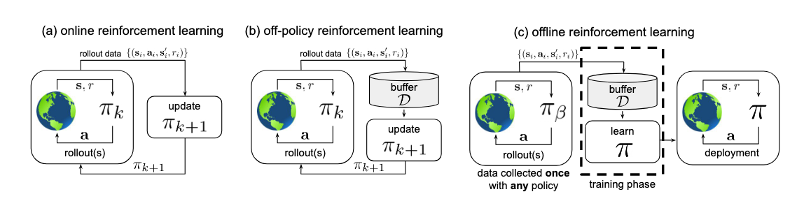

强化学习基础巩固（十二）——离线强化学习
本文[1]转载自知乎专栏《硅基进化》，作者为@tomsheep。
一、为什么需要离线强化学习
在线交互成本高
在大多数教科书或经典 RL 案例中，强化学习常常被描述为一个交互（interaction） 的过程：智能体与环境不断交互，每执行一个动作，就获得新的状态和奖励，再基于最新的信息更新策略。这样的在线学习（Online Learning）流程在一些虚拟或可模拟的场景中非常理想，比如围棋、电子游戏 Atari、机器人仿真环境等。
但是，在真实世界中，有许多领域并不适合或者无法开展大规模在线交互学习。例如：
- 医疗：在强化学习应用于医疗场景中，直接让一个尚未成熟的智能体对病人进行治疗决策，无疑是极其危险且不道德的。
- 自动驾驶：在公共道路上让未成熟的自动驾驶系统进行极端或随机探索，会带来严重的安全隐患。
- 工控系统：某些工业设备或工厂产线的停机与故障成本极高，频繁探索会带来巨大损失。
- 推荐系统：为保证用户体验，无法频繁让系统做「试错」实验，尤其是一些对用户影响较大的决策场景。
离线强化学习的核心思想
在这些场景中，一种潜在的解决方案是「先收集大量的历史数据或专家演示数据，然后训练一个策略，最后再在环境中部署或做少量在线微调」。这种只依赖于离线数据进行策略学习的模式就被称为离线强化学习（Offline RL），有时也被称为批量强化学习（Batch RL）。
离线强化学习的核心思想是：从一个固定的数据集（replay buffer 或者某些离线日志）中学习一个近似最优的策略，而不需要在训练期间与环境进行任何交互。数据集通常可能包含了多种不同的策略所产生的数据，也可能是人工或专家示范数据，也可能是历史收集的各类交互记录。
离线强化学习的适用场景
- 数据难以或成本极高地在线采样：如医疗、工业、金融等高风险场景。
- 历史数据丰富：特别是在互联网领域，推荐系统、广告系统等常常存有海量用户行为数据（相当于一个巨大数据回放缓冲区）。
- 初始策略学习或迁移学习：我们先用离线数据训练一个可行的初步策略，再在真实环境中进行较少的在线探索和微调。
当我们无法进行传统的在线或离线 - 在线混合适应时，离线 RL 无疑是打开强化学习应用场景的重要钥匙。
二、Offline RL vs Off-Policy RL

我们之前的章节里经常见到一个On-Policy/Off-Policy RL的分类视角，需要注意不要和这里介绍的Online/Offline RL分类视角混淆。
- On-Policy/Off-Policy的区分点是 「目标策略」和「行为策略（采样数据的策略）」是否相同。如果学习的目标策略就是产生数据的策略，叫On-Policy；如果学习目标策略与产生数据的策略不同，叫Off-Policy。
- Offline/Online的区分点是有没有「与环境的在线交互」。Offline RL（离线强化学习）只利用预先收集好的数据，不再与环境交互。Online RL（在线强化学习）则可能持续与环境交互，以更新策略。
不过他们之间也有联系，一般地，Offline RL会很自然地落在Off-Policy RL范畴之中，它的本质是给定一堆由某些其他策略收集到的状态—动作—回报数据，离线地学出一个最优策略。但反过来并不一定，Off-Policy RL可以是离线的，也可以是在线的。也就是说，在训练时仍可以与环境交互，或者继续收集新的数据；它只是不要求数据完全由当前策略产生，也允许来自旧策略或外部策略的数据进行训练。
这意味着，Offline RL在算法上需要比普通 Off-Policy 方法更保守（Conservative），需要更强的泛化能力。因为如果策略在新环境中发生「分布外」（Out-of-Distribution）的动作或状态，就可能与训练数据集分布差异过大，从而导致决策失效或回报剧烈下降。我们一般把这种现象称为分布偏移（Distribution Shift）。
三、离线强化学习的主要问题
离线强化学习的最大挑战可总结为一句话：你只能基于给定的有限数据集训练策略，但在实际部署时，你的策略可能会走到数据集中从未出现过的状态、动作分布。
分布偏移
由于策略学习发生在一个固定的数据集中，而训练完成后部署的策略可能并不与原数据的行为策略相同，导致策略在部署过程中会遇到许多尚未见过或样本极少的状态 - 动作对 (State-Action Pairs)。这与监督学习中的「训练 - 测试分布对齐」要求不是一个量级的难度。
在经典的 Off-Policy Q-learning 中（如 DQN 使用经验回放），它依赖不断地采样新的数据来修正 Q 函数估计错误。当我们用离线数据训练时，策略分布和训练数据分布不匹配时就可能导致严重的 Q 函数过估计（Overestimation），并在部署时行为失效。
如果策略在训练后倾向于选择那些在离线数据里出现频率很低甚至未出现过的动作，那么对于这些动作的 Q 估计几乎是没有根据的，容易带来错误的评估和风险。
泛化与评估
离线强化学习还要面临策略的泛化和准确评估问题：
- 在传统在线 RL 中，我们可以不停地在环境中测试当前策略性能，从而进行调参和早停。但在离线场景中，我们极其依赖离线数据。缺乏真实环境的交互和测试会使得对策略的评估存在不确定性。
- 一些离线 RL 算法还会有更强的保守性，在训练结束后得到的策略往往无法过于激进地探索，也没有保证一定是全局最优的；但至少能避免分布偏移过大的失效问题。
因此，离线强化学习算法一般需要采用一定的手段来限制或关注「可行」动作分布，其中就包括基于行为克隆（Behavior Cloning，BC）的约束、基于 Q 函数的不确定性惩罚、或者通过环境模型来模拟新分布的影响等方式。
四、离线强化学习的常见方法
离线强化学习研究发展迅速，并涌现出多种不同的分类视角。这里我们采用一个相对直观的分类，并举例说明主要算法思路、动机和它们想要解决的问题，同时强调它们之间在理念上的联系：
- 基于行为克隆（Behavior Cloning）的方法
- Q-learning 类似框架下的离线方法
- 利用模型的离线强化学习（Model-based Offline RL）
- 结合策略约束与不确定性估计的方法
- 其他有代表性的方法与思路
1. 基于行为克隆的方法
在离线数据集非常「优质」的情况下，最简单的做法就是直接学习数据集中「表现好的策略」或「专家示范策略」。这种方法我们在上一章的模仿学习中已经见过了，这就把问题简化为一个监督学习问题：把状态 - 动作对看作训练样本，通过回归（或分类）来重现离线数据里的专家动作。
这种方法实现简单、训练稳定，但缺点是仅仅复制数据中的行为，无法利用价值函数的优化来超越数据中最优策略。若数据质量差或不包含足够「好」的演示，那么 BC 学到的策略也不会太好；若数据质量参差不齐，更缺少对优质动作与劣质动作的区分。
如果想要更突出高回报的样本，可以将行为克隆与优势函数（Advantage Function）的估计结合起来，也就是说，区分数据集中好与坏的动作，加大对优质动作的学习权重。比如，AWAC（Advantage Weighted Actor-Critic）算法中，会用一个 Critic 来估计当前策略对每个动作的价值，然后在 Actor 更新时使用与优势函数相关的权重从数据集中提取更优的动作。不过这种方法需要依赖对优势函数的准确估计，这在离线场景可能受分布偏移影响而产生估计误差。
2. Q-learning 类似框架下的离线方法
在我们之前的章节中，经常见到Q-learning以及其衍生类方，特别是在 Off-Policy 范式中（如 DQN、DDPG、SAC 等）。要把它们「离线化」，核心就是要解决「分布外动作的 Q 值估计」问题。否则，网络会倾向于高估数据集中未见过或采样稀少的动作。
Conservative Q-Learning (CQL)
传统 Q-learning 容易对未见过的动作过于乐观的问题，而在离线场景，我们需要让模型更加「保守」，宁可低估未见动作的 Q 值，也不要冒过度估计的风险。
CQL 在更新 Q 函数时引入了一个额外的惩罚项，限制 Q 函数对「数据分布之外」的动作过于乐观的估计。形式上，它会让 Q 函数在采样外的动作拥有更低的 Q 值，从而鼓励策略在训练后更可能留在数据分布内。
这样一来，CQL 对分布偏移有一定的鲁棒性，可以在各种数据质地（best, medium, random 等）都能表现良好。而且不需要手动限制策略，只需要在 Q 函数学习时加一项保守惩罚。但 CQL 的训练过程比标准 Q-learning 更复杂，需要平衡超参数。而且只靠 Q 函数的保守估计，可能无法充分利用数据中存在的跨分布信息。
Batch-Constrained Deep Q-learning (BCQ)
另一种减少分布偏移的思路是，把动作限制在离线数据的近邻区域。BCQ 通过生成器（Generative Model）或变分自编码器（VAE）来学习数据集中「可行动作分布」。在执行时，只从可行动作分布中采样，或者进行局部搜索，从而避免在部署时执行分布外动作。
这种方法也适合于连续动作空间（通过 VAE 进行近似）。但缺点是依赖生成器的质量，如果生成器无法精确地学习到有用的「局部动作分布」，仍可能局限于数据中已有的甚至次优的行为模式。
3. 基于模型的离线强化学习
我们也可以借用之前介绍过的Model-based RL的思路，把它和离线数据结合。如果能够学习环境模型（比如动态转移模型），通过在离线数据集上对环境动力学进行建模，再在学到的模型上进行部署或策略改进，就能「模拟」不同策略的后果，从而更灵活地进行离线学习。但这里同样面临分布偏移（也就是模型在未知区域的泛化能否靠谱）的问题。
MOPO (Model-based Offline Policy Optimization)
MOPO 尝试在环境模型之外额外建一个「不确定度」模型（或惩罚项），当策略在虚拟环境中走向分布外状态时，就会受到额外的惩罚，从而避免在不可信的区域过度乐观地推进策略学习。MOPO可以「智能地利用环境模型做数据扩增」，但必须得知道自己在哪些区域不可信，从而降低过度乐观。
这里的关键是，确保模型的不确定性估计是可靠的，即满足，其中是真实的动态，而是估计的动态，是模型不确定性的估计。
MOReL (Model-based Offline Reinforcement Learning)
与 MOPO 类似，MOReL 也在构建一个环境动态模型后，用一个所谓的「terminated state」或「penalized state」来模拟促使策略远离高不确定度区域。一旦模型发现某些区域没有足够的数据支持，就会将相关状态判定为「终止」或「惩罚」状态，用高惩罚或者强制结束的方式来引导策略避开这些区域。
不过，它的局限性也和MOPO 类似，建模误差始终是瓶颈，需要平衡「探索未知」与「惩罚未知」的关系。如果离线数据覆盖范围非常有限，即使模型非常保守，也难以得到高回报策略。
4. 结合策略约束与不确定性估计的方法
这类方法的总体思路是：在学习策略时，通过某种「距离度量」或者不确定性度量，约束策略不能偏离离线数据。与之前介绍的方法可以有部分重叠，这些约束手段往往可以与 Q-learning、Model-based 等结合。
BEAR (Bootstrapping Error Accumulation Reduction)
BEAR 算法通过最小化策略分布与离线行为分布之间的某种衡量距离（如 MMD），使得新策略不会在动作空间中大幅偏离离线数据库中出现的分布，同时还要保证 Q-learning 的更新。这避免了对分布外动作的过度乐观估计和不稳健学习，通过 MMD 等核方法进行分布匹配，让策略「走得更稳」。
BEAR在理论上提供了对分布偏移的控制，可在一定程度上保留强化学习的灵活性，相对于纯 BC 能获得较优策略。但它需要在训练中频繁计算分布距离，算法实现和超参数调试都相对复杂。另外对离线数据分布的多样性要求较高，否则很可能出现策略难以改进的情况。
BRAC (Batch-Constrained Reinforcement learning)
BRAC 与 BEAR 的思路类似，但更加强调在策略更新时明确地对与离线数据分布不匹配的动作增加惩罚项。它定义了多种变体（如 BRAC-p、BRAC-pr）。
BRAC 同时进行价值函数和策略更新，在策略更新时，额外挂一个「约束项」或「KL 散度惩罚」来逼迫策略不偏离离线数据分布。可以看作带有「离线数据分布守恒」的 Actor-Critic 框架。
5. 其他离线强化学习方向
除了上述思路外，其他一些离线强化学习方法可大致归纳为：
- 对不确定性进行更细粒度的建模：例如利用迁移学习或元学习手段，在遇到跟离线数据分布不同的新环境时，迅速进行自适应。
- 评估 Offline RL 策略：离线策略评估（Offline Policy Evaluation, OPE）是一个重要研究方向，怎样用少量验证数据或一些自洽性指标更准确地预估策略表现，是实际落地的关键。
- LLM 和 Offline RL 结合：LLM 往往能提供强大的语义特征，如何与Offline RL 结合开始成为新的热门话题（例如把 LLM 用于辅助动作决策，或与环境模型集成）。
五、离线/在线混合方法：先离线再在线微调
在很多现实场景中，我们既无法直接从零开始在线训练，也不想只依赖离线数据训练到的「保守」策略。一个更加务实的思路是：先离线学习一个初始策略，再在环境中做少量在线探索与改进。这既能够让我们充分利用已有的数据，又能在安全或可控风险的环境中进一步微调策略，以获得比纯离线学习更高的回报。
常见流程
- 利用离线数据训练一个离线 RL 模型。此时不与真实环境交互，没有线上收集阶段。
- 拿到一个初始策略或 Q 函数后，在可控的在线环境中，以该策略为基础进行少量交互和数据收集。
- 将这部分新交互数据与原离线数据合并，再次进行策略更新。过程中可使用类似 Off-Policy RL 的方法（DQN、SAC 等），但往往保留保守约束以避免过度偏离原分布。
- 不断重复，直到策略满足性能或安全需求。
代表性算法：AWAC、CRR 等
- AWAC（Advantage Weighted Actor-Critic）：先在离线数据中训练 Critic，利用优势函数对数据进行加权采样，学习 Actor 得到一个较好初始策略。然后在在线过程中，继续采取与优势加权的 Actor-Critic 更新策略。
- CRR（Critic Regularized Regression）：采用一种基于 Critic 的回归思想，把离线数据中回报较高的动作在策略回归中给予更大的权重。在线时，继续用标准 Off-Policy 或 Actor-Critic 框架做微调。
两类算法都体现出一个原则：离线学习 + 保守更新，再搭配适度的在线数据，可以同时兼顾安全、保守与性能提升。
六、总结
离线强化学习能够帮助我们有效利用已有数据、降低在线探索的风险和成本。对于一个实际系统而言，如果可以拿到大量高质量的历史数据，并且希望在部署阶段保持较高的安全性，离线强化学习可能是强化学习落地的最佳途径之一。不过，由于无法依赖环境的实时反馈，其方法设计必须格外关注分布偏移和泛化能力，这也使得这一领域充满挑战。
- 数据质量 VS 算法复杂度：如果离线数据包含了丰富的高质量演示（如专家示范），那么简单的行为克隆就足够让策略表现不错；如果数据噪声大、覆盖不足，就需要 CQL、BCQ、BEAR 等更复杂的算法。
- 分布偏移处理是核心：几乎所有离线强化学习算法，都要通过某种方式来减少或惩罚在数据分布之外的过度乐观，经典思路包括：
- Q 函数保守估计（CQL）；
- 动作空间限制生成（BCQ）；
- 分布距离约束（BEAR、BRAC）；
- 对未知区域进行模型不确定性惩罚（MOPO、MOReL）。
- 先离线后在线微调：如果条件允许少量在线交互，往往能显著提升最终策略质量。但需要小心，在线的探索和更新过程仍然要保留对分布外区域的防护。否则即使在在线阶段，也可能面临安全性或性能骤降问题。
- 策略评估：离线场景中的策略评估具有挑战，可以借助 Off-Policy Evaluation（OPE）方法（如 WIS、FQE 等）来估计学到的策略性能，并结合跨验证或模拟测试来验证策略的健壮性。
- 实际部署: 在真实世界中，需要充分考虑系统对安全与鲁棒性的需求，离线 RL 可能只是整个方案的一部分，还需要配套监控、异常处理、业务逻辑等模块，不能单靠策略网络包打天下。